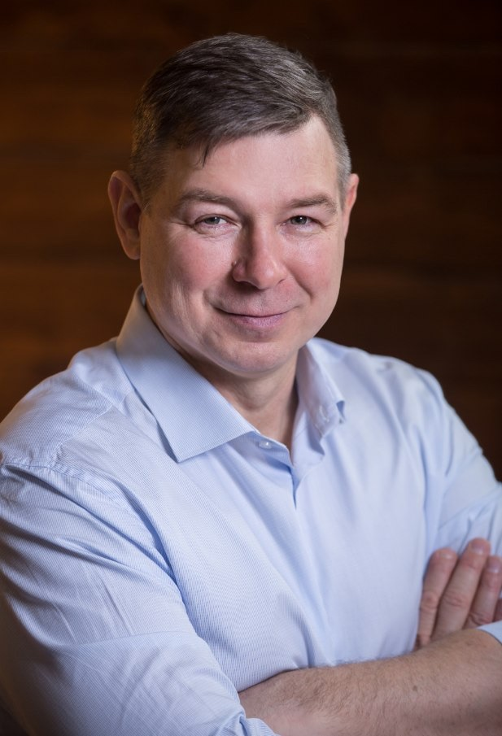

Индивидуальное обучение методу Бутейко
Коротко. Курс метода Бутейко — это 10 индивидуальных занятий по 30–60 минут, 2–3 раза в неделю, в течение одного месяца, в Zoom, Telegram или другом удобном мессенджере. Между занятиями — домашние задания и регулярная связь в чате.
Стоимость курса — 450 €. Предварительная консультация бесплатная.

Индивидуальная программа обучения методу Бутейко с персональным сопровождением, практическими занятиями и постепенным формированием физиологического стереотипа дыхания
Как проходит обучение
Обучение проходит индивидуально в Zoom, Telegram или другом удобном мессенджере.
Курс включает 10 индивидуальных занятий продолжительностью от 30 до 60 минут. Занятия проводятся 2–3 раза в неделю, при этом полный курс необходимо пройти в течение одного месяца.
Во время занятий мы изучаем и практически отрабатываем упражнения по методу Бутейко. Между встречами участник выполняет домашние задания и самостоятельно повторяет освоенные упражнения.
В процессе обучения контролируются:
- контрольная пауза и её динамика;
- частота пульса;
- навык уменьшения вентиляции и управления дыханием;
- правильность выполнения упражнений;
- понимание принципов метода;
- изменения самочувствия и динамика симптомов.
Между занятиями поддерживается регулярная связь в чате. Участник присылает короткие отчёты о выполнении практики, а я проверяю их и при необходимости корректирую работу. Можно использовать текстовые и голосовые сообщения, а в случае необходимости — короткую видеосвязь.
Программа имеет общую структуру, но конкретные упражнения, интенсивность практики и темп обучения подбираются индивидуально.
Первое занятие
Первое занятие начинается со знакомства и оценки исходного состояния. Мы обсуждаем самочувствие, образ жизни, перенесённые заболевания, индивидуальные особенности и проблемы, с которыми человек пришёл на курс. Проводятся начальные измерения, в частности контрольной паузы и частоты пульса, оцениваются особенности дыхания. Далее я объясняю основные принципы метода Бутейко и провожу первую практику. Уже на первом занятии участник начинает осваивать навык уменьшения вентиляции и более физиологичного дыхания.
Перед началом курса также обсуждаются вопросы безопасности. Метод Бутейко не заменяет медицинскую диагностику и лечение. Мы не назначаем и не отменяем лекарственные препараты и не изменяем назначения врача. При наличии заболеваний участник продолжает поддерживать связь со своим врачом. При необходимости вопрос участия в дыхательных практиках следует предварительно согласовать с врачом.
Материалы курса
Во время обучения участник получает дополнительные материалы, которые помогают лучше понять метод и самостоятельно практиковать между занятиями. Материалы предоставляются навсегда — в бессрочное пользование.
В материалы курса могут входить:
- видеоуроки и записи практических занятий;
- таблицы для контроля показателей;
- методические материалы;
- книги и дополнительная литература;
- описания упражнений;
- материалы по физиологии дыхания;
- примеры и опыт других участников.
Материалы используются как дополнение к индивидуальной работе и помогают сформировать навык самостоятельной практики.
Результат обучения
Главная цель курса — научить человека самостоятельно пользоваться методом Бутейко.
После завершения обучения участник должен понимать принципы метода, уметь правильно выполнять основные упражнения, контролировать своё дыхание и самостоятельно входить в практику уменьшения вентиляции. Человек учится применять метод для нормализации дыхательного стереотипа, улучшения общего самочувствия и, по возможности, уменьшения выраженности отдельных функциональных симптомов.
Особое внимание уделяется тому, чтобы после завершения курса участник не зависел постоянно от преподавателя, а мог грамотно и безопасно продолжать практику самостоятельно.
Сопровождение во время и после курса
В течение всего индивидуального курса участник регулярно связывается со мной между занятиями.
В чате можно присылать короткие отчёты, вопросы, текстовые и голосовые сообщения. При необходимости возможна дополнительная короткая видеосвязь. Во время прохождения индивидуального курса участник также получает бесплатный доступ к регулярным групповым практическим занятиям и учебным программам, которые проводятся в этот период.
После завершения десяти основных занятий, при необходимости, я продолжаю бесплатное сопровождение ещё в течение 30 дней. В этот период можно задавать вопросы, присылать результаты практики и получать рекомендации по дальнейшей самостоятельной работе.
Важно о методе и безопасности
Метод Бутейко я преподаю как систему дыхательных практик, которая может применяться в рамках оздоровительной практики и физической терапии.
Во время обучения мы работаем с дыхательным стереотипом, навыком уменьшения избыточной вентиляции и самостоятельным выполнением дыхательных упражнений.
Метод Бутейко не заменяет медицинскую диагностику и назначенное врачом лечение.
Мы не назначаем и не отменяем лекарственные препараты и не изменяем назначения врача. При наличии хронических заболеваний или других состояний вопрос участия в дыхательных практиках следует согласовать со своим врачом.
Программа обучения
Программа состоит из теоретической и практической частей. Теория даёт понимание физиологических механизмов дыхания и принципов метода Бутейко, а практическая часть формирует навык самостоятельной работы с дыханием.
Теоретическая часть
- основные принципы метода Бутейко;
- физиология дыхания и газообмена;
- роль углекислого газа и кислорода в регуляции дыхания;
- понятие избыточной вентиляции лёгких;
- механизмы формирования дыхательного стереотипа;
- контрольная пауза и её использование для оценки дыхания;
- частота пульса и другие показатели самоконтроля;
- глубокодыхательная проба — гипервентиляционная проба Бутейко;
- связь дыхания с физической нагрузкой, расслаблением и общим самочувствием;
- принципы безопасной самостоятельной практики.
Практическая часть
- определение исходных показателей и индивидуальных особенностей дыхания;
- освоение навыка уменьшения вентиляции;
- формирование более физиологичного дыхательного стереотипа;
- практики расслабления и уменьшения избыточного дыхательного усилия;
- выполнение упражнений метода Бутейко в покое;
- постепенное применение навыков во время повседневной активности и физической нагрузки;
- контроль контрольной паузы, пульса, самочувствия и динамики симптомов;
- домашняя практика между занятиями;
- проверка техники и индивидуальная коррекция упражнений;
- постепенное усложнение практики в соответствии с состоянием и подготовленностью;
- формирование навыка самостоятельного вхождения в практику;
- подготовка к самостоятельному использованию метода после завершения курса.
Программа имеет общую последовательность, но конкретный объём теории, упражнения, интенсивность и темп их освоения подбираются индивидуально.
Стоимость обучения
Индивидуальный курс — 450 €.
В стоимость входят 10 индивидуальных занятий, персональное сопровождение между встречами, учебные материалы, доступ к групповым практикам в период прохождения курса и, при необходимости, дополнительное сопровождение в течение 30 дней после завершения основной программы.
Оплата в евро. Реквизиты для оплаты вы получите в службе поддержки в Telegram. После оплаты мы свяжемся с вами, чтобы согласовать начало обучения.
Перед оплатой ознакомьтесь с публичным договором (офертой), политикой конфиденциальности и условиями возврата средств (документы на украинском языке). Совершая оплату, вы подтверждаете, что ознакомились с этими документами и соглашаетесь с их условиями.
Запись на консультацию
Перед началом обучения можно пройти предварительную бесплатную консультацию: мы обсудим ваши цели, формат работы и возможность участия в программе. После нажатия кнопки вы перейдёте в Telegram. Напишите слово «Консультация», и я свяжусь с вами, чтобы уточнить ваш запрос и согласовать удобное время.
Если вы не пользуетесь Telegram, связаться со мной можно другим удобным способом. Перейдите на страницу «Контакты» и выберите подходящий вариант связи.
Существует парадокс дыхания, о котором знают далеко не все: если человек дышит чрезмерно глубоко и вентилирует лёгкие больше, чем нужно организму, это не обязательно улучшает доставку кислорода к тканям.
Один из физиологических механизмов, связанных с отдачей кислорода гемоглобином тканям, описывает эффект Бора.
Если вы хотите подробнее узнать о механизмах действия метода Бутейко, его научных основах и исследованиях, нажмите кнопку ниже.